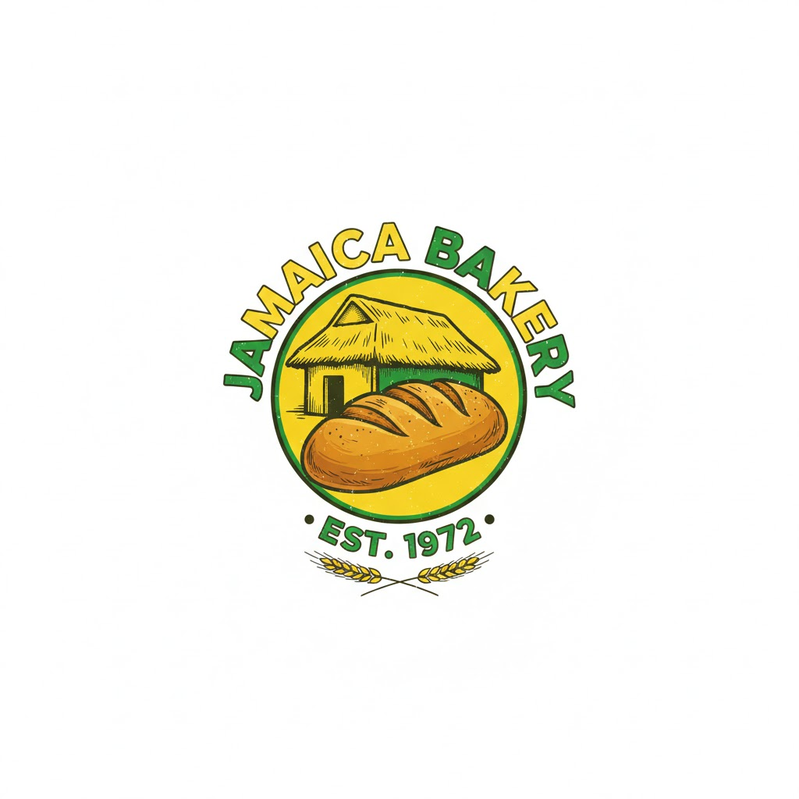
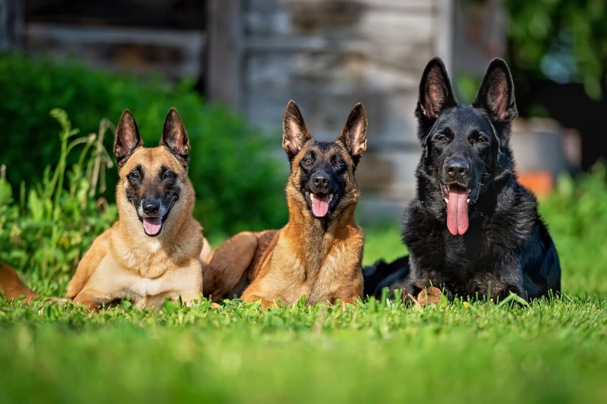

Frontend
HTML5, CSS3, JavaScript
💻 Desenvolvedor de Software | 🛠️ Técnico em Sistemas | 🚀 Sempre evoluindo
Sou apaixonado por tecnologia e desenvolvimento web. Trabalho com criação de interfaces modernas, responsivas e organizadas utilizando HTML5, CSS3 e JavaScript.
Também possuo conhecimento em manutenção de sistemas e hardware, o que me proporciona uma visão completa tanto do software quanto do funcionamento físico das máquinas.
HTML5, CSS3, JavaScript
Design responsivo, acessibilidade, boas práticas de interface
Manutenção de sistemas, hardware e diagnóstico técnico

Site institucional com arquitetura semântica e carregamento otimizado. Apliquei técnicas de design responsivo e manipulação de DOM para criar uma experiência ágil, priorizando a visibilidade da causa nos motores de busca.
Ver Projeto
Projeto em fase ativa de desenvolvimento, focado em uma estrutura HTML5 semântica e acessível. Atualmente implementando estilização avançada e lógica de interatividade para garantir uma experiência de usuário moderna e responsiva.
Ver Projeto